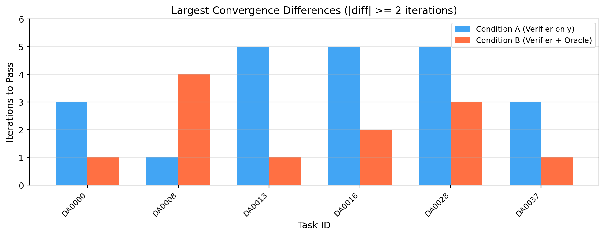

Adversarial feedback for formally verified code synthesis
When an LLM writes Dafny code that fails to verify, the usual fix is to send the verifier's error back and ask for a repair. I tested whether adding a second LLM, a critic that turns the failure into a concrete counterexample, makes that repair loop work better, and whether the critic's strength matters.
Why it matters
Formal verification is the strongest guarantee we have that code does what its specification says. As more code is written by models, a verifier in the loop leaves no room for subtle bugs: the proof either checks or it doesn't. The catch is that verifier errors are terse. They give a line number and a failed assertion, not the reason the proof broke.
If a second model could explain the failure, repairs might converge in fewer attempts, and some tasks that never verify might come unstuck.
What I did
I used the CEGIS repair loop from the Vericoding benchmark (Bursuc et al., 2025) on 50 Dafny APPStest tasks, DA0000 to DA0049. Claude Sonnet 4.6 fills in the implementation, Dafny checks it with a 120-second timeout, and on failure the model gets up to five attempts, each a fresh call with the benchmark's prompt templates. I ran one trial per task and condition:
- A, verifier only. The verifier's error goes back to the generator.
- B, verifier plus critic. A second Sonnet 4.6 call sees the specification, the broken code and the error, and returns a concrete counterexample: input values and the postcondition clause they violate. That goes into the repair prompt alongside the error.
I then re-ran condition B with Claude Opus 4.6 as the critic on the 17 hardest tasks, the ones that took more than two attempts under A, keeping Sonnet as the generator.
What I found
On pass rates, the critic made no difference. Both conditions solved 24/50 on the first attempt. By the fifth, verifier-only had 43/50 and the critic condition 42/50; that one-task gap is a JSON-parsing failure on DA0019, not the critic making things worse.
The critic did get there sooner: 36/50 against 33/50 within two attempts. Among the 42 tasks both conditions solved, the critic version converged faster on 9 and slower on 6. That difference is not significant (Wilcoxon signed-rank on iteration counts, p = 0.21), and with one trial per task I can't separate a real speedup from sampling noise. DA0013 went from five attempts to one, but DA0008 went from one to four.
Show the numbers
| Condition | k = 1 | 2 | 3 | 4 | 5 |
|---|---|---|---|---|---|
| Verifier only | 24 | 33 | 38 | 39 | 43 |
| Verifier + critic | 24 | 36 | 39 | 41 | 42 |

The more interesting result is a single task. DA0014 asks for a proof that reducing a fraction by its GCD gives an irreducible fraction. It failed with verifier-only feedback, with the Sonnet critic, and on reruns. With Opus as the critic, it passed.
The difference was in what the critic said. The Sonnet critic described the symptom: the lemma times out
and the postcondition can't be verified. The Opus critic named the missing step: the else branch of
GcdDividesNumerator needed a call to GcdDividesDenominator(a-b, b). The generator
added exactly that call on its next attempt and the proof closed. Across the 17 hard tasks, the Opus critic
solved 11 against the Sonnet critic's 10.
One task makes this a case study, not an effect. It suggests, without showing, that the useful thing a critic offers is proof-engineering advice (which lemma to call, and where) rather than counterexamples.
The failure taxonomy
Seven tasks failed under both conditions. I sorted them into five failure modes; some tasks show more than one.
- Verification timeout (DA0003, DA0014, DA0023, DA0038). The solver runs out of time on the main method or its lemmas, even when the code may be correct. DA0014 later fell to the Opus critic.
- Nonlinear arithmetic (DA0003, DA0024). GCD, modular arithmetic or exponentiation: the model writes lemmas with wrong preconditions and can't fix the proof structure across attempts.
- Complex quantifier reasoning (DA0006). Nested existentials over ticket permutations; the model writes loop invariants with quantifiers Dafny can't find triggers for.
- Specification complexity (DA0038, DA0043). Several interacting concepts; each helper lemma times out, so the main proof never assembles.
- Syntax errors on the final attempt (DA0024). Invalid Dafny in the fifth attempt, a sign the model was cycling between proof strategies without converging.
Limitations
- One trial per task and condition, so I make no statistical claim about the aggregate.
- The 50-task subset is easier than the benchmark: 43/50 at baseline, against 60 to 67% on the full 677-task Dafny APPStest set. Effects may be larger on harder tasks.
- The Opus result rests on a single task.
- There is no non-LLM counterexample baseline, so I can't tell "any second feedback channel helps" apart from "LLM proof advice helps".
The full report is on Apart Research, and the code and per-attempt results are on GitHub. Back to research.